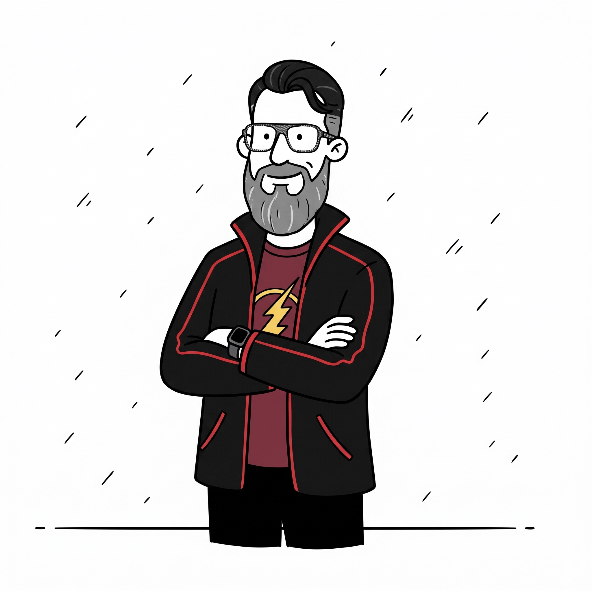
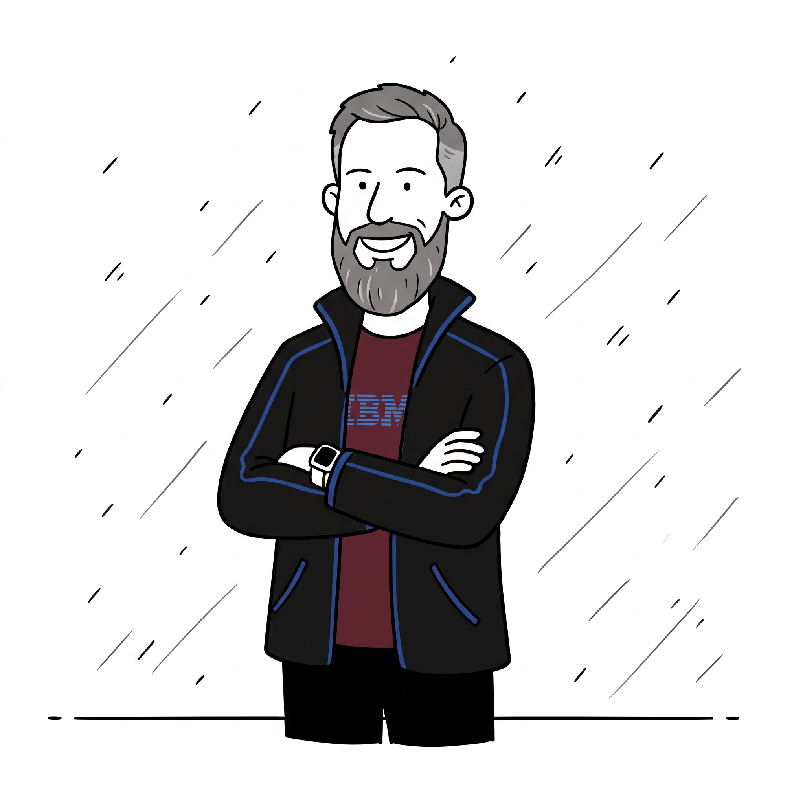
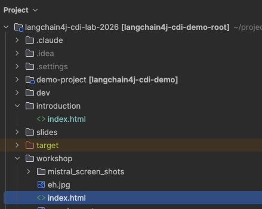

Hands-on Lab · Devoxx Belgium 2026
A2A Agent Lab
Wiring Up the AI Mesh:
Building A2A-Compliant Java Agents
Java · Python · Quarkus · Spring Boot · WildFly — all talking A2A
Emmanuel Hugonnet • Mario Fusco • Kevin Dubois
Your guide

Emmanuel Hugonnet (ehsavoie)
25+ years in Java • WildFly core developer
Co-creator of the A2A Java SDK & langchain4j-cdi
WildFly LangChain4j A2A Java SDK Apache NetBeans
Your guide

Mario Fusco
Java Champion • IBM
Co-author of Modern Java in Action (Manning)
Expert in functional programming, lambdas & Drools
Java Champion LangChain4j Agentic AI Drools
The one who makes Java look like it was always meant to be functional
Your guide

Kevin Dubois
IBM • Quarkus contributor • Developer advocate
Quarkus LangChain4j Agentic AI Cloud Native
The one who makes cloud-native Java look easy
The story
DevConf 2026 — 5,000 attendees, one AI mesh
🛫 8:15 AM — Maya lands at Brussels Airport. Her flight was delayed two hours.
"My flight was delayed so I missed the morning shuttle. I'm interested in agentic AI and Java agents — what talks should I catch today, how do I get to Kinepolis Antwerp quickly, and can you log my taxi receipt?"
sessions for Maya
room capacity
Bolt vs NMBS
log €45 taxi
coordinates all
The glue:
A2A Protocol
Agent-to-Agent — open standard
🏛️ Now part of the Agentic AI Foundation
📋 AgentCard
Self-describing capability manifest at /.well-known/agent.json
📨 SendMessage
Structured tasks with streaming & async support
📡 Multiple transports
"Any runtime, any language — if it speaks A2A, it joins the mesh"
The DevSphere mesh
Exercise 6 (bonus): same agent WAR on two WildFly nodes, shared PostgreSQL task store + Kafka replication
Workshop agenda
@RegisterAiService tool calling
(30 min)
@SupervisorAgent, @A2AClientAgent, multi-tenant Concierge, web UI
(25 min)
Each exercise has a exercises/ skeleton and a solutions/ reference — work at your own pace.
Get the code

Open workshop/index.html
in your favourite browser.